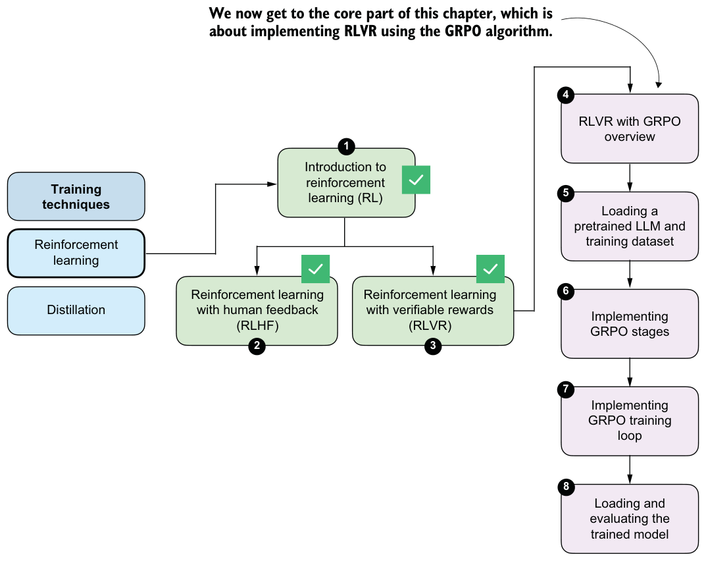
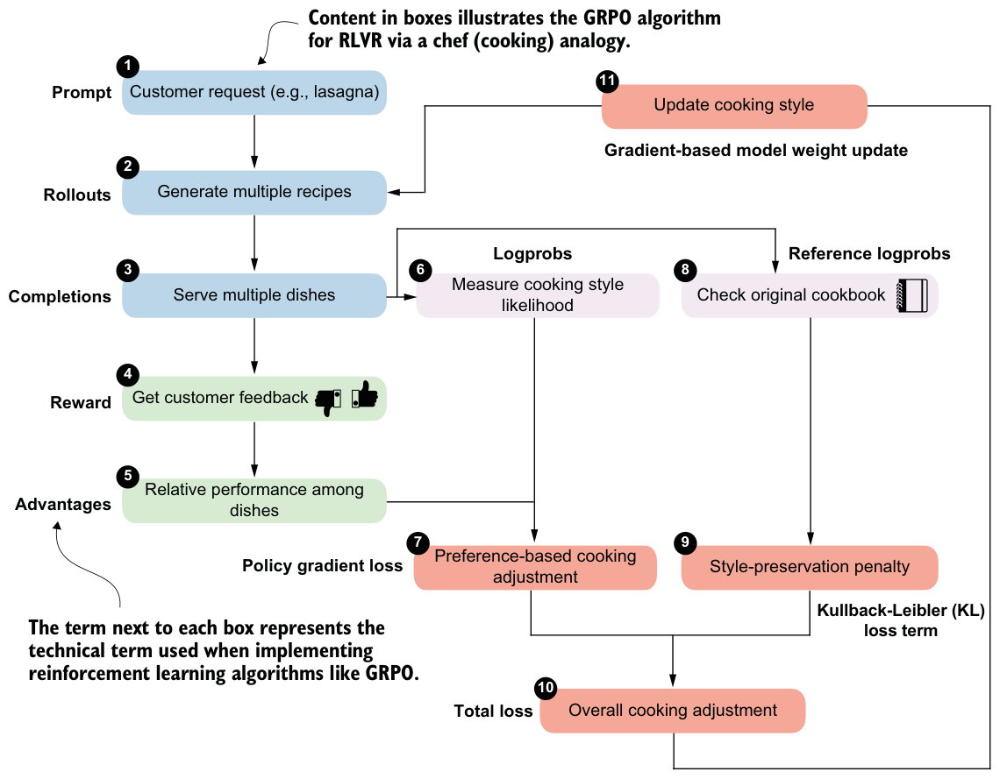
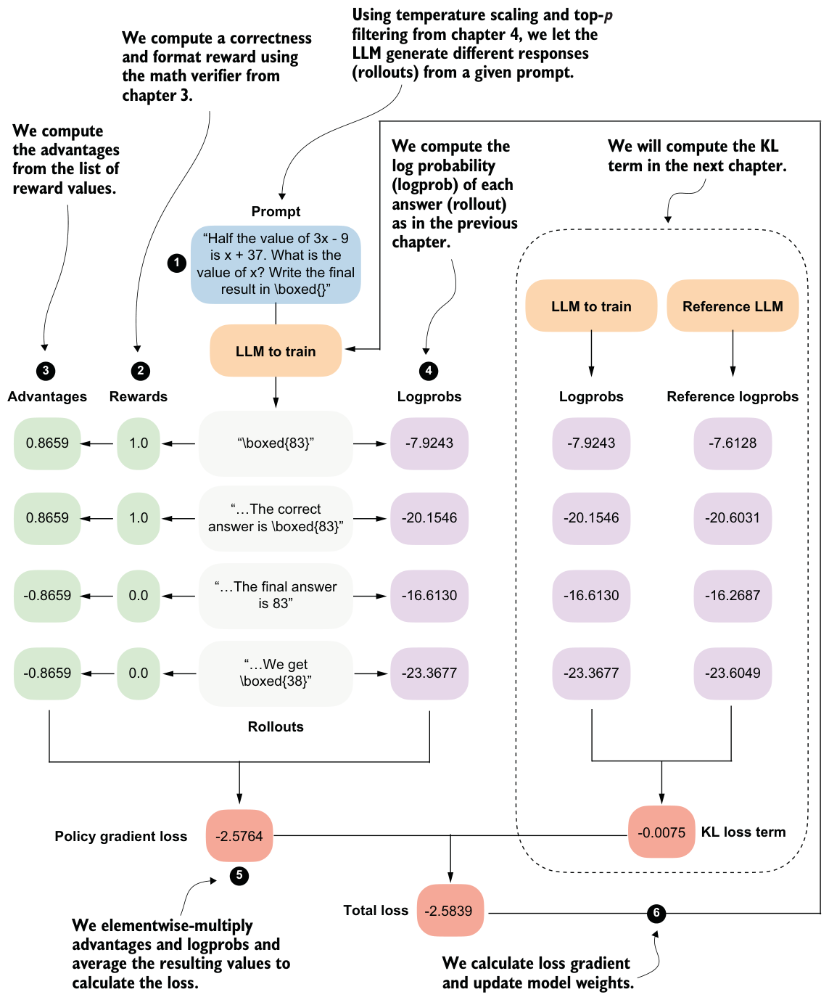

6.2RLVR using GRPO
Now that we’ve looked at the big picture and seen how RL fits within the overall development cycle of LLMs, we’ll turn to the implementation. Specifically, we’ll implement RLVR to train a reasoning model, as illustrated in the chapter road map in figure 6.7. This method is similar to DeepSeek-R1-Zero, but we’ll apply it at a much smaller scale, using a smaller model and less data, since a comparable full training run would require several hundred thousand dollars in GPU compute.
RLVR defines the overall training setup, namely, the use of automatically verifiable rewards. In addition, we need a concrete policy optimization algorithm that can be used within this RLVR framework to update the model weights and train the model.
The term “policy” is RL-specific jargon and refers, in this context, to the LLM we want to train. Specifically, we’ll use the Group Relative Policy Optimization (GRPO) algorithm for policy optimization. In short, RLVR determines what learning signal is available, and GRPO determines how that signal is used to update the model weights.

Policy gradient algorithms
6.2.1High-level GRPO intuition via a chef analogy
The technical details of the GRPO algorithm for RLVR can initially be a bit overwhelming because it has many moving parts and a lot of domain-specific RL terminology. So before we start with a technical overview and implementation, take a look at figure 6.8, which introduces the technical terms and approach of GRPO through the analogy of a chef preparing a meal.

Walking through the flowchart in figure 6.8, imagine we’re running a small food delivery service:
1 Each day, we receive a single customer request (the prompt) asking us to prepare a certain dish (for example, lasagna).
2 For that request, we cook our famous lasagna dish, but while doing so, we try out several different recipe variations (the rollouts).
3 After preparing the recipes, we create multiple dishes (completions). Note that in the LLM setting, a rollout refers to the entire generation process for a prompt, while a completion is the resulting output text. In practice, the two terms are often used interchangeably.
4 Customers only give us feedback (the reward) after tasting the entire dish, not while it is being prepared. This means we judge the final result as a whole rather than judging the individual cooking steps.
5 We compare how the dishes performed relative to each other based on the customer feedback from stage 4. This helps us identify which recipe variations received higher rewards and which received lower rewards for this particular request.
6 For each completed dish, we also keep track of how typical it was of our current cooking style, that is, how closely it followed our usual techniques and ingredient choices (logprobs).
7 Using relative feedback from stage 5 and how characteristic each dish was of our current cooking style from stage 6, we determine how to tweak the cooking style (policy gradient loss). Here, we want to reinforce choices that led to better dishes and reduce those that led to worse ones.
8 At the same time, we consult our original cookbook.
9 We then apply a style-preservation penalty that encourages trying new recipe variations but prevents overly drastic changes to our cooking style that could scare away existing customers.
10 The preference-based adjustment and the cooking style-preservation penalty are combined into a single overall measure, or overall loss, that determines how the cooking style should change. The goal is to balance customer satisfaction with consistency.
11 Finally, we update the cooking style (gradient-based model weight update) so that future dishes are more likely to satisfy customer preferences while remaining close to the original cookbook.
Even in this relatively basic analogy, GRPO still has lots of components and moving parts.
6.2.2The high-level GRPO procedure
Following the chef analogy from the previous section, the flowchart in figure 6.9 provides a technical overview of the GRPO algorithm for RLVR, with concrete values that we will compute as we implement GRPO step by step.

The GRPO outline in figure 6.9 contains many technical components. We’ll start by implementing a simplified version of GRPO that omits the KL loss term shown on the right side of the figure. In chapter 7, we’ll add this missing KL loss term for completeness. The KL loss is part of the original GRPO formulation, but it is not strictly essential. Many LLM developers omit it in practice because doing so simplifies implementation and can sometimes improve modeling performance.
If the overview shown in figure 6.9 looks complicated, don’t worry. We will build up the algorithm step by step. For now, it’s best to treat figure 6.9 as a high-level road map that will help orient us as we work through the individual pieces.